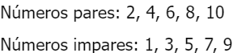
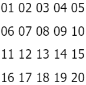
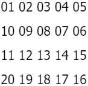

Taller #5 de PSeInt
Aquí te presento el taller #5: Funciones
1. Realizar un programa en el cual se solicite la edad de una persona. Si la persona es mayor o
igual a
18 años, deberá mostrar en pantalla: Usted es mayor de edad.
SubProceso mensaje ( edad ) Si edad > 17 Entonces Escribir "Usted es mayor de edad"; FinSi FinSubProceso Proceso verificarMayorEdad Definir edad Como Entero; Escribir "Digite su edad"; Leer edad; Mensaje(edad); FinProceso
2. Realizar un programa en el cual se solicite la edad de una persona. Si la persona es menor a 18
años,
deberá mostrar en pantalla: Usted aún es un niño(a).
SubProceso mensaje ( edad ) Si edad < 18 Entonces Escribir "Usted aún es un niño(a)"; FinSi FinSubProceso Proceso verificarMenorEdad Definir edad Como Entero; Escribir "Digite su edad"; Leer edad; Mensaje(edad); FinProceso
3. Realizar un programa en el cual se solicite el nombre, apellidos y edad de la persona. Si la
persona
es mayor o igual a 18 años, entonce se deberá imprimir en pantalla [Nombre completo] usted es mayor
de
edad, por lo tanto puede entrar a la fiesta. Si la edad de la persona es menor que 18 años,
entonces,
deberá imprimirse el siguiente mensaje: [Nombre completo] usted es menor de edad, por lo tanto, no
puede
entrar a la fiesta, por favor devuélvase a su casa.
SubProceso mostrarMensaje ( nombre, apellido, edad ) Si edad < 18 Entonces Escribir nombre, " ", apellido, " usted es menor de edad, por lo tanto, no puede entrar a la fiesta, por favor devuélvase a su casa"; FinSi Si edad > 17 Entonces Escribir nombre, " ", apellido, " usted es mayor de edad, por lo tanto puede entrar a la fiesta"; FinSi FinSubProceso Proceso verificarEdad Definir nombre Como Caracter; Definir apellido Como Caracter; Definir edad Como Entero; Escribir "Digite su nombre"; Leer nombre; Escribir "Digite su apellido"; Leer apellido; Escribir "Digite su edad"; Leer edad; mostrarMensaje(nombre, apellido, edad); FinProceso
4. La video tienda que presta sus servicios de alquiler de películas a los usuarios del barrio el
Porvenir, requiere de una aplicación que permita registrar el alquiler de las películas que
adquieren
sus usuarios. Para cada usuario se debe permitir la opción de alquilar película, consultar películas
disponibles y recibir película en la video tienda con la opción de realizar anotaciones sobre estas
si
se llegan a presentar daños u otra novedad sobre la película.
SubProceso alquilarPelicula ( nombrePelicula, pelicula, peliculaDos, disponibilidadP1, disponibilidadP2 ) Escribir "Escribe el nombre de la película que deseas alquilar"; Leer nombrePelicula; nombrePelicula <- minusculas(nombrePelicula); Si nombrePelicula = pelicula Y disponibilidadP1 = Falso Entonces Escribir "Esa película no se encuentra disponible"; FinSi Si nombrePelicula = peliculaDos Y disponibilidadP2 = Falso Entonces Escribir "Esa película no se encuentra disponible"; FinSi Si nombrePelicula = pelicula Y disponibilidadP1 = Verdadero Entonces disponibilidadP1 <- Falso; Escribir "Selección Exitosa"; FinSi Si nombrePelicula = peliculaDos Y disponibilidadP2 = Verdadero Entonces disponibilidadP2 <- Falso; Escribir "Selección Exitosa"; FinSi Si nombrePelicula <> pelicula Y nombrePelicula <> peliculaDos Entonces Escribir "No tenemos esa película en nuestra tienda"; FinSi FinSubProceso SubProceso consultarPelicula ( pelicula, peliculaDos ) Escribir "Estas son las películas que se encuentran disponibles:"; Escribir pelicula; Escribir peliculaDos; FinSubProceso SubProceso recibirPelicula ( nombrePelicula, pelicula, peliculaDos, disponibilidadP1, disponibilidadP2, observacion, observacionDos ) Escribir "Escribe el nombre de la película que vas a recibir"; Leer nombrePelicula; nombrePelicula <- minusculas(nombrePelicula); Si nombrePelicula = pelicula Entonces disponibilidadP1 <- Verdadero; Escribir "Observaciones"; Leer observacion; SiNo Si nombrePelicula = peliculaDos Entonces disponibilidadP2 <- Verdadero; Escribir "Observaciones"; Leer observacionDos; SiNo Escribir "Esa película no hace parte de nuestra tienda"; FinSi FinSi FinSubProceso Proceso alquilerDePeliculas Definir nombrePelicula, pelicula, peliculaDos, observacion, observacionDos Como Caracter; Definir disponibilidadP1, disponibilidadP2 Como Logico; Definir opcion Como Entero; nombrePelicula <- ""; observacion <- ""; observacionDos <- ""; pelicula <- "avatar"; peliculaDos <- "terminator"; disponibilidadP1 <- Verdadero; disponibilidadP2 <- Verdadero; Escribir "Elija una opción:"; Escribir "1: Alquilar Película"; Escribir "2: Consultar Película"; Escribir "3: Recibir Película"; Leer opcion; Segun opcion Hacer 1: alquilarPelicula(nombrePelicula, pelicula, peliculaDos, disponibilidadP1, disponibilidadP2); 2: consultarPelicula(pelicula, peliculaDos); 3: recibirPelicula(nombrePelicula, pelicula, peliculaDos, disponibilidadP1, disponibilidadP2, observacion, observacionDos); De Otro Modo: Escribir "La opción elegida no existe"; FinSegun FinProceso
5. La Droguería Mi Salud presta sus servicios en la localidad de Suba y requiere una aplicación para
poder facturar los productos que vende a sus clientes y para ello, los productos tienen unas
características que deben indicársele al cliente para que pueda escoger el producto a comprar. Para
cada
cliente, se tienen las opciones de compra de producto, consulta de precios por producto y
devoluciones
en caso de que se presenten.
SubProceso comprar ( mensaje, producto, productoDos, cantidad, cantidadDisponibleProducto, cantidadDisponibleProductoDos ) Escribir "Digite el nombre del producto que quiere comprar"; Escribir "Paracetamol, Cantidad: ", cantidadDisponibleProducto; Escribir "Ibuprofeno, Cantidad: ", cantidadDisponibleProductoDos; Leer mensaje; mensaje <- minusculas(mensaje); Si mensaje <> producto Y mensaje <> productoDos Entonces Escribir "Ese producto no se encuentra disponible en nuestra droguería"; SiNo Escribir "Digite la cantidad que quiere comprar"; Leer cantidad; Si mensaje = producto Entonces Si cantidad > 0 Y cantidadDisponibleProducto >= cantidad Entonces cantidadDisponibleProducto <- cantidadDisponibleProducto - cantidad; Escribir "Su compra ha sido exitosa"; Escribir "Las unidades restantes de este producto son: ", cantidadDisponibleProducto; SiNo Escribir "La cantidad no puede ser inferior a 1 ni superior a ", cantidadDisponibleProducto; FinSi FinSi Si mensaje = productoDos Entonces Si cantidadDisponibleProductoDos >= cantidad Entonces cantidadDisponibleProductoDos <- cantidadDisponibleProductoDos - cantidad; Escribir "Su compra ha sido exitosa"; Escribir "Las unidades restantes de este producto son: ", cantidadDisponibleProductoDos; SiNo Escribir "La cantidad no puede ser inferior a 1 ni superior a ", cantidadDisponibleProductoDos; FinSi FinSi FinSi FinSubProceso SubProceso consultar ( mensaje, producto, productoDos, productoPrecio, productoPrecioDos ) Escribir "Digite el producto del cual quiere consultar su precio"; Leer mensaje; mensaje <- minusculas(mensaje); Si mensaje = producto Entonces Escribir "El precio del ", producto, " es de: $", productoPrecio; FinSi Si mensaje = productoDos Entonces Escribir "El precio del ", productoDos, " es de: $", productoPrecioDos; FinSi Si mensaje <> producto Y mensaje <> productoDos Entonces Escribir "Ese producto no se encuentra disponible"; FinSi FinSubProceso SubProceso devolver ( mensaje, producto, productoDos, cantidad, cantidadDisponibleProducto, cantidadDisponibleProductoDos ) Escribir "Digite el producto que quiere devolver"; Leer mensaje; mensaje <- minusculas(mensaje); Si mensaje <> producto Y mensaje <> productoDos Entonces Escribir "Ese producto no hace parte de nuestra droguería"; SiNo Escribir "Digite la cantidad que quiere devolver"; Leer cantidad; Si mensaje = producto Entonces cantidadDisponibleProducto <- cantidadDisponibleProducto + cantidad; Escribir "Devolución exitosa"; Escribir "Unidaes disponibles de ", producto, ": ", cantidadDisponibleProducto; FinSi Si mensaje = productoDos Entonces cantidadDisponibleProductoDos <- cantidadDisponibleProductoDos + cantidad; Escribir "Devolución exitosa"; Escribir "Unidaes disponibles de ", productoDos, ": ", cantidadDisponibleProductoDos; FinSi FinSi FinSubProceso Proceso drogueria Definir mensaje, producto, productoDos Como Caracter; Definir productoPrecio, productoPrecioDos Como Real; Definir opcion, cantidad, cantidadDisponibleProducto, cantidadDisponibleProductoDos Como Entero; mensaje <- ""; producto <- "paracetamol"; productoDos <- "ibuprofeno"; cantidad <- 0; productoPrecio <- 2000; productoPrecioDos <- 3000; cantidadDisponibleProducto <- 10; cantidadDisponibleProductoDos <- 10; Escribir "Droguería Mi Salud"; Escribir "Digite el número de la opción que desea seleccionar"; Escribir "1. Comprar Producto"; Escribir "2. Consulta de precios por producto"; Escribir "3. Devoluciones"; Leer opcion; Segun opcion Hacer 1: comprar( mensaje, producto, productoDos, cantidad, cantidadDisponibleProducto, cantidadDisponibleProductoDos ); 2: consultar( mensaje, producto, productoDos, productoPrecio, productoPrecioDos ); 3: devolver( mensaje, producto, productoDos, cantidad, cantidadDisponibleProducto, cantidadDisponibleProductoDos ); De Otro Modo: Escribir "La opción elegida no existe"; FinSegun FinProceso
6. El taller de motos "El Maquinista" recibe motocicletas de alto cilindraje para realizar las
respectivas revisiones y requiere una aplicación que le permita registrar los servicios generados a
sus
clientes. Para cada motocicleta se debe tener registro del ingreso al taller y las observaciones por
parte del cliente. También debe existir registro de salida del taller con las novedades y otra de
arreglos hechos por el mecánico en caso de que se requiera inventariar cambios repuestos en la
motocicleta al entregarla.
SubProceso registrarIngreso ( placa, registroIngreso, observacion ) Escribir "Digite la placa de la moto:"; Leer placa; Si placa <> "" Entonces Escribir "Digite la fecha de ingreso de la moto al taller"; Escribir "En este formato: dia/mes/año"; Leer registroIngreso; Si registroIngreso <> "" Entonces Escribir "Digite las observaciones que tenga el cliente"; Leer observacion; Escribir "Registra de ingreso exitoso"; SiNo Escribir "El dato no puede ser vacío"; FinSi SiNo Escribir "El dato no puede ser vacío"; FinSi FinSubProceso SubProceso registrarSalida ( placa, placaEjemplo, registroSalida, registroArreglos ) Escribir "Digite la placa de la moto"; Leer placa; placa <- Mayusculas(placa); Si placaEjemplo = placa Entonces Escribir "Digite la fecha de salida de la moto del taller"; Escribir "En este formato: dia/mes/año"; Leer registroSalida; Si registroSalida <> "" Entonces Escribir "Digite los arreglos realizados en la moto por parte del mecánico"; Leer registroArreglos; Escribir "Registra de salida exitoso"; SiNo Escribir "El dato no puede ser vacío"; FinSi SiNo Escribir "No hay registro de esa placa"; FinSi FinSubProceso Proceso tallerDeMotos Definir placa, placaEjemplo, registroIngreso, registroSalida, observacion, registroArreglos Como Caracter; Definir opcion Como Entero; placa <- ""; placaEjemplo <- "AAA-123"; registroIngreso <- ""; registroSalida <- ""; observacion <- ""; registroArreglos <- ""; Escribir "Taller de motos El Maquinista"; Escribir "Digite el número de la opción que desea seleccionar"; Escribir "1. Registro de ingreso de la motocicleta"; Escribir "2. Registro de salida de la motocicleta"; Leer opcion; Segun opcion Hacer 1: registrarIngreso( placa, registroIngreso, observacion ); 2: registrarSalida( placa, placaEjemplo, registroSalida, registroArreglos ); De Otro Modo: Escribir "La opción elegida no existe"; FinSegun FinProceso
7. La Secretaría de Salud Municipal requiere de una aplicación que le permita calcular el IMC
(Índice de
masa corporal) y requiere los datos peso en kilogramos y estatura en metros Para cada persona
encuestada
adicional a los datos suministrados, debe mostrar el resultado para cada uno y establecer en qué
rango
se encuentra (bajo peso, normal, sobrepeso y obeso).
SubProceso imc <- calcularIMC ( imc, peso, estatura ) imc <- peso / estatura ^ 2; FinSubProceso SubProceso calcularCategoria ( imc, peso, estatura ) Escribir "Secretaría de Salud Municipal"; Escribir "Para calcular el índice de masa corporal (IMC), digite los siguientes datos:"; Escribir "Digite su peso:"; Leer peso; Si peso >= 38.4 Entonces Escribir "Digite su estatura:"; Leer estatura; Si estatura >= 1.44 Entonces Si calcularIMC( imc, peso, estatura ) < 18.5 Entonces Escribir "Su IMC es ", calcularIMC( imc, peso, estatura ), " lo que indica que su peso está en la categoría:"; Escribir "Bajo peso"; FinSi Si calcularIMC( imc, peso, estatura ) >= 18.5 Y calcularIMC( imc, peso, estatura ) <= 24.9 Entonces Escribir "Su IMC es ", calcularIMC( imc, peso, estatura ), " lo que indica que su peso está en la categoría:"; Escribir "Normal"; FinSi Si calcularIMC( imc, peso, estatura ) >= 25 Y calcularIMC( imc, peso, estatura ) <= 29.9 Entonces Escribir "Su IMC es ", calcularIMC( imc, peso, estatura ), " lo que indica que su peso está en la categoría:"; Escribir "Sobrepeso"; FinSi Si calcularIMC( imc, peso, estatura ) >= 30 Entonces Escribir "Su IMC es ", calcularIMC( imc, peso, estatura ), " lo que indica que su peso está en la categoría:"; Escribir "Obesidad"; FinSi SiNo Escribir "Su estatura no puede ser inferior a 1.44"; FinSi SiNo Escribir "Su peso no puede ser inferior a 38.4"; FinSi FinSubProceso Proceso calculadoraDeIMC Definir peso, estatura, imc Como Real; peso <- 0; estatura <- 0; imc <- 0; calcularCategoria( imc, peso, estatura ); FinProceso
8. El pastelero Don Carlos es el mejor pastelero de la ciudad y requiere una aplicación que le
permita
registrar los pedidos de los clientes en cuanto a las tortas que realiza. Cada torta tiene unas
características propias como sabor, cantidad (porciones) y decoraciones). Se requiere que la
aplicación
permita registrar los pedidos, las tortas disponibles y las ventas que se registren
diariamente.
SubProceso registrarPedido ( cliente Por Referencia, pedido Por Referencia, torta Por Referencia, torta2 Por Referencia, torta3 Por Referencia ) Escribir "Digite el nombre del cliente"; Leer cliente; Si cliente <> "" Entonces Limpiar Pantalla; Escribir "Digite el tipo de torta que quiere comprar"; Escribir "Lista de tortas disponibles:"; Escribir ""; Escribir torta; Escribir ""; Escribir torta2; Escribir ""; Escribir torta3; Leer pedido; Si pedido <> "" Entonces Si pedido = torta Entonces Escribir "Registro exitoso"; SiNo Si pedido = torta2 Entonces Escribir "Registro exitoso"; SiNo Si pedido = torta3 Entonces Escribir "Registro exitoso"; SiNo Escribir "Esa torta no se encuentra disponible"; FinSi FinSi FinSi SiNo Escribir "El dato no puede ser vacío"; FinSi SiNo Escribir "El dato no puede ser vacío"; FinSi FinSubProceso SubProceso mostrarTorta ( torta Por Referencia, torta2 Por Referencia, torta3 Por Referencia ) Limpiar Pantalla; Escribir "Lista de tortas disponibles:"; Escribir ""; Escribir torta; Escribir "Sabor: Chocolate"; Escribir "Decoración: Crema de chocolate y M&Ms cubriendo la superficie"; Escribir ""; Escribir torta2; Escribir "Sabor: Dulce de Leche"; Escribir "Decoración: Crema Chantilly con cerezas"; Escribir ""; Escribir torta3; Escribir "Sabor: Vainilla"; Escribir "Decoración: Crema chantilly, merengues y duraznos"; FinSubProceso SubProceso registrarVenta ( clienteEjemplo Por Referencia, pedidoEjemplo Por Referencia ) Si clienteEjemplo <> "" Entonces Si pedidoEjemplo <> "" Entonces Escribir "Ventas del día:"; Escribir clienteEjemplo; Escribir pedidoEjemplo; SiNo Escribir "No hubo ninguna venta el día de hoy"; FinSi FinSi FinSubProceso Proceso pasteleria Definir torta, torta2, torta3, cliente, pedido, clienteEjemplo, pedidoEjemplo Como Caracter; Definir opcion Como Entero; pedido <- ""; clienteEjemplo <- "Juan Osorio"; pedidoEjemplo <- "Torta de Chocolate"; torta <- "Torta de Chocolate"; torta2 <- "Torta de 3 Leches"; torta3 <- "Torta de Vainilla"; Escribir "Pastelería"; Escribir ""; Escribir "Digite el número de la opción que desea realizar"; Escribir "1. Registrar Pedido"; Escribir "2. Mostrar tortas disponibles"; Escribir "3. Mostrar ventas del día"; Leer opcion; Segun opcion Hacer 1: registrarPedido( cliente, pedido, torta, torta2, torta3 ); 2: mostrarTorta( torta, torta2, torta3 ); 3: registrarVenta( clienteEjemplo, pedidoEjemplo ); De Otro Modo: Escribir "La opción elegida no existe"; FinSegun FinProceso
9. El profesor de geometría está explicando a sus estudiantes las fórmulas para calcular el área de
diferentes figuras geométricas, para ello requiere una aplicación que le facilite el ejercicio
solicitándole los valores al estudiante. La aplicación debe permitir que el estudiante seleccione si
desea calcular el área de un rectángulo, triángulo o trapecio. No olvide solicitar los datos
necesarios
para realizar cada cálculo y mostrar su respectivo resultado.
SubProceso calcularRectangulo ( largo, ancho, resultado ) Escribir "Digite el valor del largo del rectángulo"; Leer largo; Escribir "Digite el valor del ancho del rectángulo"; Leer ancho; resultado <- largo * ancho; Escribir "El valor del área del rectángulo es de: ", resultado; FinSubProceso SubProceso calcularTriangulo ( base, altura, resultado ) Escribir "Digite el valor de la base del triángulo"; Leer base; Escribir "Digite el valor de la altura del triángulo"; Leer altura; resultado <- base * altura / 2; Escribir "El valor del área del triángulo es de: ", resultado; FinSubProceso SubProceso calcularTrapecio ( base, baseMenor, altura, resultado ) Escribir "Digite el valor de la base mayor del trapecio"; Leer base; Escribir "Digite el valor de la base menor del trapecio"; Leer baseMenor; Escribir "Digite el valor de la altura del trapecio"; Leer altura; resultado <- ((base + baseMenor) * altura) / 2; Escribir "El valor del área del trapecio es de: ", resultado; FinSubProceso Proceso AreaDeFigurasGeometricas Definir base, baseMenor, altura, largo, ancho, resultado Como Real; Definir opcion Como Entero; base <- 0; baseMenor <- 0; altura <- 0; largo <- 0; ancho <- 0; resultado <- 0; Escribir "Escoja le figura geómetrica de la que desea calcular el área"; Escribir "1. Rectángulo"; Escribir "2. Triángulo"; Escribir "3. Trapecio"; Leer opcion; Segun opcion Hacer 1: calcularRectangulo( largo, ancho, resultado ); 2: calcularTriangulo( base, altura, resultado ); 3: calcularTrapecio( base, baseMenor, altura, resultado ); De Otro Modo: Escribir "La opción elegida no existe"; FinSegun FinProceso
10. El banco "Su banco fiel" es un banco que inicia sus actividades financieras y necesita una
aplicación para llevar las cuentas de sus usuarios; por lo tanto, se sugiere que la cuenta tenga los
atributos titular y cantidad. Para cada cliente las cuentas permitirán realizar ingresos, retiros o
consultas de valor. En los ingresos no se pueden insertar valores negativos y para los retiros el
valor
no puede ser mayor al valor que tiene en la cuenta.
SubProceso realizarIngreso ( ingreso, cantidad ) Escribir "Digite la cantidad de dinero que desea ingresar"; Leer ingreso; Si ingreso > 0 Entonces cantidad <- cantidad + ingreso; Escribir "Su saldo actual quedó en: $", cantidad; SiNo Escribir "La cantidad de dinero a ingresar no puede ser 0 o inferior"; FinSi FinSubProceso SubProceso realizarRetiro ( retiro, cantidad ) Escribir "Digite la cantidad de dinero que desea retirar"; Leer retiro; Si retiro <= cantidad Entonces cantidad <- cantidad - retiro; Escribir "Su saldo actual quedó en: $", cantidad; SiNo Escribir "La cantidad de dinero a retirar no puede superar la cantidad de dinero disponible"; FinSi FinSubProceso SubProceso consultarSaldo ( cantidad ) Escribir "El saldo que tiene actualmente es de: $", cantidad; FinSubProceso Proceso Banco Definir titular, mensaje Como Caracter; Definir cantidad, ingreso, retiro Como Real; Definir opcion Como Entero; titular <- "juan osorio"; ingreso <- 0; retiro <- 0; cantidad <- 1000.0; Escribir "Su Banco Fiel"; Escribir ""; Escribir "Digite el nombre del titular"; Leer mensaje; mensaje <- minusculas(mensaje); Si mensaje = titular Entonces Escribir "Titular de la cuenta: ", titular; Escribir "Número de la cuenta: 7481950263"; Escribir "Tipo de cuenta: Ahorros"; Escribir "Digite el número de la opción que quiere seleccionar"; Escribir "1. Realizar ingreso"; Escribir "2. Realizar retiro"; Escribir "3. Consulta"; Leer opcion; Segun opcion Hacer 1: realizarIngreso( ingreso, cantidad ); 2: realizarRetiro( retiro, cantidad ); 3: consultarSaldo( cantidad ); De Otro Modo: Escribir "La opción elegida no existe"; FinSegun SiNo Escribir "No hay ninguna cuenta a nombre de ese titular"; FinSi FinProceso
6. Se está creando una aplicación que va a estar conectada con un prototipo que permita almacenar
contactos telefónicos en el dispositivo. Para ello cada contacto debe contener nombre completo,
teléfono
y organización. Se requiere que la aplicación permita añadir 3 contactos verificando que el número
no
esté almacenado, buscar contactos almacenados y eliminar contactos si el usuario lo requiere.
Recuerde
que el sistema debe terminar cuando el usuario así lo indique.
SubProceso anadirContacto ( contador Por Referencia, verificarTelefono Por Referencia, nombre Por Referencia, nombre2 Por Referencia, nombre3 Por Referencia, telefono Por Referencia, telefono2 Por Referencia, telefono3 Por Referencia, organizacion Por Referencia, organizacion2 Por Referencia, organizacion3 Por Referencia ) Si contador < 3 Entonces Escribir "Digite el número de teléfono del contacto"; Leer verificarTelefono; Si verificarTelefono <> telefono Y verificarTelefono <> telefono2 Y verificarTelefono <> telefono3 Y contador = 0 Entonces telefono <- verificarTelefono; Escribir "Digite el nombre del contacto:"; Leer nombre; Escribir "Digite la organización a la que pertenece el contacto:"; Leer organizacion; contador <- contador + 1; Escribir "Registro exitoso"; SiNo Si verificarTelefono <> telefono Y verificarTelefono <> telefono2 Y verificarTelefono <> telefono3 Y contador = 1 Entonces telefono2 <- verificarTelefono; Escribir "Digite el nombre del contacto:"; Leer nombre2; Escribir "Digite la organización a la que pertenece el contacto:"; Leer organizacion2; contador <- contador + 1; Escribir "Registro exitoso"; SiNo Si verificarTelefono <> telefono Y verificarTelefono <> telefono2 Y verificarTelefono <> telefono3 Y contador = 2 Entonces telefono3 <- verificarTelefono; Escribir "Digite el nombre del contacto:"; Leer nombre3; Escribir "Digite la organización a la que pertenece el contacto:"; Leer organizacion3; contador <- contador + 1; Escribir "Registro exitoso"; SiNo Escribir "Ese número de teléfono ya se encuetra registrado"; FinSi FinSi FinSi SiNo Escribir "No se pueden registrar más de 3 contactos"; FinSi FinSubProceso SubProceso buscarContacto ( buscar Por Referencia, nombre Por Referencia, nombre2 Por Referencia, nombre3 Por Referencia, telefono Por Referencia, telefono2 Por Referencia, telefono3 Por Referencia, organizacion Por Referencia, organizacion2 Por Referencia, organizacion3 Por Referencia ) Escribir "Digite el telefono del contacto que quiere buscar"; Leer buscar; Si buscar = telefono Entonces Escribir "Nombre: ", nombre; Escribir "Teléfono: ", telefono; Escribir "Organización: ", organizacion; SiNo Si buscar = telefono2 Entonces Escribir "Nombre: ", nombre2; Escribir "Teléfono: ", telefono2; Escribir "Organización: ", organizacion2; SiNo Si buscar = telefono3 Entonces Escribir "Nombre: ", nombre3; Escribir "Teléfono: ", telefono3; Escribir "Organización: ", organizacion3; SiNo Escribir "Ese contacto no se encuentra registrado"; FinSi FinSi FinSi FinSubProceso SubProceso eliminarContacto ( contador Por Referencia, buscar Por Referencia, nombre Por Referencia, nombre2 Por Referencia, nombre3 Por Referencia, telefono Por Referencia, telefono2 Por Referencia, telefono3 Por Referencia, organizacion Por Referencia, organizacion2 Por Referencia, organizacion3 Por Referencia ) Si nombre = "" Y nombre2 = "" Y nombre3 = "" Entonces Escribir "No hay contactos registrados"; SiNo Escribir "Digite el telefono del contacto que desea eliminar"; Leer buscar; Si buscar = telefono Entonces nombre <- ""; telefono <- ""; organizacion <- ""; contador <- contador - 1; Escribir "El contacto ha sido eliminado"; SiNo Si buscar = telefono2 Entonces nombre2 <- ""; telefono2 <- ""; organizacion2 <- ""; contador <- contador - 1; Escribir "El contacto ha sido eliminado"; SiNo Si buscar = telefono3 Entonces nombre3 <- ""; telefono3 <- ""; organizacion3 <- ""; contador <- contador - 1; Escribir "El contacto ha sido eliminado"; SiNo Escribir "Ese contacto no se encuentra registrado"; FinSi FinSi FinSi FinSi FinSubProceso Proceso agenda Definir nombre, telefono, organizacion, buscar, verificarTelefono Como Caracter; Definir nombre2, telefono2, organizacion2 Como Caracter; Definir nombre3, telefono3, organizacion3 Como Caracter; Definir opcion, contador Como Entero; contador <- 0; buscar <- ""; verificarTelefono <- ""; nombre <- ""; nombre2 <- ""; nombre3 <- ""; telefono <- ""; telefono2 <- ""; telefono3 <- ""; organizacion <- ""; organizacion2 <- ""; organizacion3 <- ""; Escribir "Agenda de contactos"; Escribir "1. Añadir contacto"; Escribir "2. Buscar contacto"; Escribir "3. Eliminar contacto"; Escribir "4. Salir de la aplicación"; Leer opcion; Mientras opcion <> 4 Hacer Segun opcion Hacer 1: anadirContacto( contador, verificarTelefono, nombre, nombre2, nombre3, telefono, telefono2, telefono3, organizacion, organizacion2, organizacion3 ); 2: buscarContacto( buscar, nombre, nombre2, nombre3, telefono, telefono2, telefono3, organizacion, organizacion2, organizacion3 ); 3: eliminarContacto( contador, buscar, nombre, nombre2, nombre3, telefono, telefono2, telefono3, organizacion, organizacion2, organizacion3 ); De Otro Modo: Escribir "Esa opción no existe"; FinSegun Escribir "Agenda de contactos"; Escribir "1. Añadir contacto"; Escribir "2. Buscar contacto"; Escribir "3. Eliminar contacto"; Escribir "4. Salir de la aplicación"; Leer opcion; FinMientras FinProceso
7. El parqueadero "El guardián" presta sus servicios de parqueadero nocturno para los usuarios del
barrio y requiere una aplicación que permita registrar los vehículos que se cuidan en estas
instalaciones. Se sugiere que el parqueadero tenga los atributos del vehículo como son, placa y
marca, y
los datos del cliente como son nombre completo y número de teléfono. Para cada vehículo se debe
permitir
la opción de ingresar al parqueadero, retirar del parqueadero y consultar si un vehículo se
encuentra en
el parqueadero. Recuerde que el sistema debe terminar cuando el usuario así lo indique. Tenga en
presente que el parqueadero solo puede almacenar máximo 5 vehículos.
SubProceso registrarVehiculo ( contador Por Referencia, verificarPlaca Por Referencia, placa Por Referencia, placa2 Por Referencia, placa3 Por Referencia, placa4 Por Referencia, placa5 Por Referencia, marca Por Referencia, marca2 Por Referencia, marca3 Por Referencia, marca4 Por Referencia, marca5 Por Referencia, nombre Por Referencia, nombre2 Por Referencia, nombre3 Por Referencia, nombre4 Por Referencia, nombre5 Por Referencia, telefono Por Referencia, telefono2 Por Referencia, telefono3 Por Referencia, telefono4 Por Referencia, telefono5 Por Referencia ) Si contador < 5 Entonces Escribir "Digite la placa del vehículo que desea registrar"; Leer verificarPlaca; Si verificarPlaca <> placa Y verificarPlaca <> placa2 Y verificarPlaca <> placa3 Y verificarPlaca <> placa4 Y verificarPlaca <> placa5 Y contador = 0 Entonces placa <- verificarPlaca; Escribir "Digite la marca"; Leer marca; Escribir "Digite el nombre completo del cliente"; Leer nombre; Escribir "Digite el teléfono del cliente"; Leer telefono; contador <- contador + 1; Escribir "Registro exitoso"; SiNo Si verificarPlaca <> placa Y verificarPlaca <> placa2 Y verificarPlaca <> placa3 Y verificarPlaca <> placa4 Y verificarPlaca <> placa5 Y contador = 1 Entonces placa2 <- verificarPlaca; Escribir "Digite la marca"; Leer marca2; Escribir "Digite el nombre completo del cliente"; Leer nombre2; Escribir "Digite el teléfono del cliente"; Leer telefono2; contador <- contador + 1; Escribir "Registro exitoso"; SiNo Si verificarPlaca <> placa Y verificarPlaca <> placa2 Y verificarPlaca <> placa3 Y verificarPlaca <> placa4 Y verificarPlaca <> placa5 Y contador = 2 Entonces placa3 <- verificarPlaca; Escribir "Digite la marca"; Leer marca3; Escribir "Digite el nombre completo del cliente"; Leer nombre3; Escribir "Digite el teléfono del cliente"; Leer telefono3; contador <- contador + 1; Escribir "Registro exitoso"; SiNo Si verificarPlaca <> placa Y verificarPlaca <> placa2 Y verificarPlaca <> placa3 Y verificarPlaca <> placa4 Y verificarPlaca <> placa5 Y contador = 3 Entonces placa4 <- verificarPlaca; Escribir "Digite la marca"; Leer marca4; Escribir "Digite el nombre completo del cliente"; Leer nombre4; Escribir "Digite el teléfono del cliente"; Leer telefono4; contador <- contador + 1; Escribir "Registro exitoso"; SiNo Si verificarPlaca <> placa Y verificarPlaca <> placa2 Y verificarPlaca <> placa3 Y verificarPlaca <> placa4 Y verificarPlaca <> placa5 Y contador = 4 Entonces placa5 <- verificarPlaca; Escribir "Digite la marca"; Leer marca5; Escribir "Digite el nombre completo del cliente"; Leer nombre5; Escribir "Digite el teléfono del cliente"; Leer telefono5; contador <- contador + 1; Escribir "Registro exitoso"; SiNo Escribir "Esa placa ya se encuentra registrada"; FinSi FinSi FinSi FinSi FinSi SiNo Escribir "No se pueden registrar más vehículos"; FinSi FinSubProceso SubProceso ingresarParqueadero ( verificarPlaca Por Referencia, ingresar Por Referencia, ingresar2 Por Referencia, ingresar3 Por Referencia, ingresar4 Por Referencia, ingresar5 Por Referencia, placa Por Referencia, placa2 Por Referencia, placa3 Por Referencia, placa4 Por Referencia, placa5 Por Referencia ) Si ingresar = Verdadero Y ingresar2 = Verdadero Y ingresar3 = Verdadero Y ingresar4 = Verdadero Y ingresar5 = Verdadero Entonces Escribir "No se pueden ingresar más vehículos al parqueadero"; SiNo Escribir "Digite la placa del vehículo que desea ingresar"; Leer verificarPlaca; Si verificarPlaca = placa Entonces ingresar <- Verdadero; Escribir "El vehículo ha sido ingresado al parqueadero"; FinSi Si verificarPlaca = placa2 Entonces ingresar2 <- Verdadero; Escribir "El vehículo ha sido ingresado al parqueadero"; FinSi Si verificarPlaca = placa3 Entonces ingresar3 <- Verdadero; Escribir "El vehículo ha sido ingresado al parqueadero"; FinSi Si verificarPlaca = placa4 Entonces ingresar4 <- Verdadero; Escribir "El vehículo ha sido ingresado al parqueadero"; FinSi Si verificarPlaca = placa5 Entonces ingresar5 <- Verdadero; Escribir "El vehículo ha sido ingresado al parqueadero"; FinSi FinSi FinSubProceso SubProceso retirarParqueadero ( verificarPlaca Por Referencia, ingresar Por Referencia, ingresar2 Por Referencia, ingresar3 Por Referencia, ingresar4 Por Referencia, ingresar5 Por Referencia, placa Por Referencia, placa2 Por Referencia, placa3 Por Referencia, placa4 Por Referencia, placa5 Por Referencia ) Si ingresar = Falso Y ingresar2 = Falso Y ingresar3 = Falso Y ingresar4 = Falso Y ingresar5 = Falso Entonces Escribir "No hay vehículos en el parqueadero"; SiNo Escribir "Digite la placa del vehículo que desea retirar"; Leer verificarPlaca; Si verificarPlaca = placa Entonces ingresar <- Falso; Escribir "El vehículo ha sido retirado del parqueadero"; FinSi Si verificarPlaca = placa2 Entonces ingresar2 <- Falso;; Escribir "El vehículo ha sido retirado del parqueadero"; FinSi Si verificarPlaca = placa3 Entonces ingresar3 <- Falso; Escribir "El vehículo ha sido retirado del parqueadero"; FinSi Si verificarPlaca = placa4 Entonces ingresar4 <- Falso; Escribir "El vehículo ha sido retirado del parqueadero"; FinSi Si verificarPlaca = placa5 Entonces ingresar5 <- Falso; Escribir "El vehículo ha sido retirado del parqueadero"; FinSi FinSi FinSubProceso SubProceso consultar ( verificarPlaca Por Referencia, placa Por Referencia, placa2 Por Referencia, placa3 Por Referencia, placa4 Por Referencia, placa5 Por Referencia, marca Por Referencia, marca2 Por Referencia, marca3 Por Referencia, marca4 Por Referencia, marca5 Por Referencia, nombre Por Referencia, nombre2 Por Referencia, nombre3 Por Referencia, nombre4 Por Referencia, nombre5 Por Referencia, telefono Por Referencia, telefono2 Por Referencia, telefono3 Por Referencia, telefono4 Por Referencia, telefono5 Por Referencia, ingresar Por Referencia, ingresar2 Por Referencia, ingresar3 Por Referencia, ingresar4 Por Referencia, ingresar5 Por Referencia ) Si placa = "" Y placa2 = "" Y placa3 = "" Y placa4 = "" Y placa5 = "" Entonces Escribir "No hay vehículos registrados"; SiNo Escribir "Digite la placa del vehículo que desea consultar"; Leer verificarPlaca; Si verificarPlaca = placa Entonces Si ingresar = Verdadero Entonces Escribir "Este vehículo si se encuentra en el parqueadero"; Escribir "Placa: ", placa; Escribir "Marca: ", marca; Escribir "Nombre del cliente: ", nombre; Escribir "Teléfono: ", telefono; SiNo Escribir "Este vehículo no se encuentra en el parqueadero"; FinSi FinSi Si verificarPlaca = placa2 Entonces Si ingresar2 = Verdadero Entonces Escribir "Este vehículo si se encuentra en el parqueadero"; Escribir "Placa: ", placa2; Escribir "Marca: ", marca2; Escribir "Nombre del cliente: ", nombre2; Escribir "Teléfono: ", telefono2; SiNo Escribir "Este vehículo no se encuentra en el parqueadero"; FinSi FinSi Si verificarPlaca = placa3 Entonces Si ingresar3 = Verdadero Entonces Escribir "Este vehículo si se encuentra en el parqueadero"; Escribir "Placa: ", placa3; Escribir "Marca: ", marca3; Escribir "Nombre del cliente: ", nombre3; Escribir "Teléfono: ", telefono3; SiNo Escribir "Este vehículo no se encuentra en el parqueadero"; FinSi FinSi Si verificarPlaca = placa4 Entonces Si ingresar4 = Verdadero Entonces Escribir "Este vehículo si se encuentra en el parqueadero"; Escribir "Placa: ", placa4; Escribir "Marca: ", marca4; Escribir "Nombre del cliente: ", nombre4; Escribir "Teléfono: ", telefono4; SiNo Escribir "Este vehículo no se encuentra en el parqueadero"; FinSi FinSi Si verificarPlaca = placa5 Entonces Si ingresar5 = Verdadero Entonces Escribir "Este vehículo si se encuentra en el parqueadero"; Escribir "Placa: ", placa5; Escribir "Marca: ", marca5; Escribir "Nombre del cliente: ", nombre5; Escribir "Teléfono: ", telefono5; SiNo Escribir "Este vehículo no se encuentra en el parqueadero"; FinSi FinSi FinSi FinSubProceso Proceso parqueadero Definir nombre, telefono, verificarPlaca Como Caracter; Definir nombre2, telefono2 Como Caracter; Definir nombre3, telefono3 Como Caracter; Definir nombre4, telefono4 Como Caracter; Definir nombre5, telefono5 Como Caracter; Definir placa, marca Como Caracter; Definir placa2, marca2 Como Caracter; Definir placa3, marca3 Como Caracter; Definir placa4, marca4 Como Caracter; Definir placa5, marca5 Como Caracter; Definir ingresar, ingresar2, ingresar3, ingresar4, ingresar5 Como Logico; Definir opcion, contador Como Entero; ingresar <- Falso; ingresar2 <- Falso; ingresar3 <- Falso; ingresar4 <- Falso; ingresar5 <- Falso; contador <- 0; placa <- ""; placa2 <- ""; placa3 <- ""; placa4 <- ""; placa5 <- ""; Escribir "Parqueadero El Guardián"; Escribir "1. Registrar Vehículo"; Escribir "2. Ingresar al parqueadero"; Escribir "3. Retirar del parqueadero"; Escribir "4. Consultar si el vehículo se encuentra en el parqueadero"; Escribir "5. Salir de la aplicación"; Leer opcion; Mientras opcion <> 5 Hacer Segun opcion Hacer 1: Limpiar Pantalla; registrarVehiculo( contador, verificarPlaca, placa, placa2, placa3, placa4, placa5, marca, marca2, marca3, marca4, marca5, nombre, nombre2, nombre3, nombre4, nombre5, telefono, telefono2, telefono3, telefono4, telefono5 ); 2: Limpiar Pantalla; ingresarParqueadero( verificarPlaca, ingresar, ingresar2, ingresar3, ingresar4, ingresar5, placa, placa2, placa3, placa4, placa5 ); 3: Limpiar Pantalla; retirarParqueadero( verificarPlaca, ingresar, ingresar2, ingresar3, ingresar4, ingresar5, placa, placa2, placa3, placa4, placa5 ); 4: Limpiar Pantalla; consultar( verificarPlaca, placa, placa2, placa3, placa4, placa5, marca, marca2, marca3, marca4, marca5, nombre, nombre2, nombre3, nombre4, nombre5, telefono, telefono2, telefono3, telefono4, telefono5, ingresar, ingresar2, ingresar3, ingresar4, ingresar5 ); De Otro Modo: Escribir "Esa opción no existe"; FinSegun Escribir "Parqueadero El Guardián"; Escribir "1. Registrar Vehículo"; Escribir "2. Ingresar al parqueadero"; Escribir "3. Retirar del parqueadero"; Escribir "4. Consultar si el vehículo se encuentra en el parqueadero"; Escribir "5. Salir de la aplicación"; Leer opcion; FinMientras FinProceso
8. La escuela automovilística "El Maestro" requiere una aplicación que permita registrar a sus
clientes
en los cursos de enseñanza automovilística y establecer quienes lo han aprobado para continuar con
el
trámite de adquirir la licencia de conducción. Para cada usuario se debe permitir registrar su
ingreso
al curso, consultar usuarios que hayan presentado el curso y resultados de la prueba del curso (si
fueron aprobados o no). Recuerde que el sistema debe terminar cuando el usuario así lo indique.
Tenga
presente que la escuela tiene capacidad máxima de gestionar 8 usuarios en su totalidad.
SubProceso registrar ( contador Por Referencia, verificarUsuario Por Referencia, usuario Por Referencia, usuario2 Por Referencia, usuario3 Por Referencia, usuario4 Por Referencia, usuario5 Por Referencia, usuario6 Por Referencia, usuario7 Por Referencia, usuario8 Por Referencia, resultado Por Referencia, resultado2 Por Referencia, resultado3 Por Referencia, resultado4 Por Referencia, resultado5 Por Referencia, resultado6 Por Referencia, resultado7 Por Referencia, resultado8 Por Referencia ) Si contador < 8 Entonces Escribir "Escriba el número de documento del cliente"; Leer verificarUsuario; Si verificarUsuario <> usuario Y verificarUsuario <> usuario2 Y verificarUsuario <> usuario3 Y verificarUsuario <> usuario4 Y verificarUsuario <> usuario5 Y verificarUsuario <> usuario6 Y verificarUsuario <> usuario7 Y verificarUsuario <> usuario8 Y contador = 0 Entonces usuario <- verificarUsuario; Escribir "Digite el resultado que obtuvo el cliente en la prueba automovilística"; leer resultado; contador <- contador + 1; Escribir "Registro exitoso"; SiNo Si verificarUsuario <> usuario Y verificarUsuario <> usuario2 Y verificarUsuario <> usuario3 Y verificarUsuario <> usuario4 Y verificarUsuario <> usuario5 Y verificarUsuario <> usuario6 Y verificarUsuario <> usuario7 Y verificarUsuario <> usuario8 Y contador = 1 Entonces usuario2 <- verificarUsuario; Escribir "Digite el resultado que obtuvo el cliente en la prueba automovilística"; leer resultado2; contador <- contador + 1; Escribir "Registro exitoso"; SiNo Si verificarUsuario <> usuario Y verificarUsuario <> usuario2 Y verificarUsuario <> usuario3 Y verificarUsuario <> usuario4 Y verificarUsuario <> usuario5 Y verificarUsuario <> usuario6 Y verificarUsuario <> usuario7 Y verificarUsuario <> usuario8 Y contador = 2 Entonces usuario3 <- verificarUsuario; Escribir "Digite el resultado que obtuvo el cliente en la prueba automovilística"; leer resultado3; contador <- contador + 1; Escribir "Registro exitoso"; SiNo Si verificarUsuario <> usuario Y verificarUsuario <> usuario2 Y verificarUsuario <> usuario3 Y verificarUsuario <> usuario4 Y verificarUsuario <> usuario5 Y verificarUsuario <> usuario6 Y verificarUsuario <> usuario7 Y verificarUsuario <> usuario8 Y contador = 3 Entonces usuario4 <- verificarUsuario; Escribir "Digite el resultado que obtuvo el cliente en la prueba automovilística"; leer resultado4; contador <- contador + 1; Escribir "Registro exitoso"; SiNo Si verificarUsuario <> usuario Y verificarUsuario <> usuario2 Y verificarUsuario <> usuario3 Y verificarUsuario <> usuario4 Y verificarUsuario <> usuario5 Y verificarUsuario <> usuario6 Y verificarUsuario <> usuario7 Y verificarUsuario <> usuario8 Y contador = 4 Entonces usuario5 <- verificarUsuario; Escribir "Digite el resultado que obtuvo el cliente en la prueba automovilística"; leer resultado5; contador <- contador + 1; Escribir "Registro exitoso"; SiNo Si verificarUsuario <> usuario Y verificarUsuario <> usuario2 Y verificarUsuario <> usuario3 Y verificarUsuario <> usuario4 Y verificarUsuario <> usuario5 Y verificarUsuario <> usuario6 Y verificarUsuario <> usuario7 Y verificarUsuario <> usuario8 Y contador = 5 Entonces usuario6 <- verificarUsuario; Escribir "Digite el resultado que obtuvo el cliente en la prueba automovilística"; leer resultado6; contador <- contador + 1; Escribir "Registro exitoso"; SiNo Si verificarUsuario <> usuario Y verificarUsuario <> usuario2 Y verificarUsuario <> usuario3 Y verificarUsuario <> usuario4 Y verificarUsuario <> usuario5 Y verificarUsuario <> usuario6 Y verificarUsuario <> usuario7 Y verificarUsuario <> usuario8 Y contador = 6 Entonces usuario7 <- verificarUsuario; Escribir "Digite el resultado que obtuvo el cliente en la prueba automovilística"; leer resultado7; contador <- contador + 1; Escribir "Registro exitoso"; SiNo Si verificarUsuario <> usuario Y verificarUsuario <> usuario2 Y verificarUsuario <> usuario3 Y verificarUsuario <> usuario4 Y verificarUsuario <> usuario5 Y verificarUsuario <> usuario6 Y verificarUsuario <> usuario7 Y verificarUsuario <> usuario8 Y contador = 7 Entonces usuario8 <- verificarUsuario; Escribir "Digite el resultado que obtuvo el cliente en la prueba automovilística"; leer resultado8; contador <- contador + 1; Escribir "Registro exitoso"; FinSi FinSi FinSi FinSi FinSi FinSi FinSi FinSi SiNo Escribir "No se pueden registrar más clientes"; FinSi FinSubProceso SubProceso consultar ( verificarUsuario Por Referencia, usuario Por Referencia, usuario2 Por Referencia, usuario3 Por Referencia, usuario4 Por Referencia, usuario5 Por Referencia, usuario6 Por Referencia, usuario7 Por Referencia, usuario8 Por Referencia ) Escribir "Digite el número de documento del cliente para saber si se presentó al curso"; Leer verificarUsuario; Si verificarUsuario = usuario Entonces Escribir "Este cliente si se presentó al curso"; Escribir "Documento: ", usuario; SiNo Si verificarUsuario = usuario2 Entonces Escribir "Este cliente si se presentó al curso"; Escribir "Documento: ", usuario2; SiNo Si verificarUsuario = usuario3 Entonces Escribir "Este cliente si se presentó al curso"; Escribir "Documento: ", usuario3; SiNo Si verificarUsuario = usuario4 Entonces Escribir "Este cliente si se presentó al curso"; Escribir "Documento: ", usuario4; SiNo Si verificarUsuario = usuario5 Entonces Escribir "Este cliente si se presentó al curso"; Escribir "Documento: ", usuario5; SiNo Si verificarUsuario = usuario6 Entonces Escribir "Este cliente si se presentó al curso"; Escribir "Documento: ", usuario6; SiNo Si verificarUsuario = usuario7 Entonces Escribir "Este cliente si se presentó al curso"; Escribir "Documento: ", usuario7; SiNo Si verificarUsuario = usuario8 Entonces Escribir "Este cliente si se presentó al curso"; Escribir "Documento: ", usuario8; SiNo Escribir "Este cliente no se presentó al curso"; FinSi FinSi FinSi FinSi FinSi FinSi FinSi FinSi FinSubProceso SubProceso consultarResultado ( verificarUsuario Por Referencia, usuario Por Referencia, usuario2 Por Referencia, usuario3 Por Referencia, usuario4 Por Referencia, usuario5 Por Referencia, usuario6 Por Referencia, usuario7 Por Referencia, usuario8 Por Referencia, resultado Por Referencia, resultado2 Por Referencia, resultado3 Por Referencia, resultado4 Por Referencia, resultado5 Por Referencia, resultado6 Por Referencia, resultado7 Por Referencia, resultado8 Por Referencia ) Escribir "Digite el número de documento del cliente para consultar el resultado de su prueba"; Leer verificarUsuario; Si verificarUsuario = usuario Entonces Escribir "El resultado de la prueba es: ", resultado; SiNo Si verificarUsuario = usuario2 Entonces Escribir "El resultado de la prueba es: ", resultado2; SiNo Si verificarUsuario = usuario3 Entonces Escribir "El resultado de la prueba es: ", resultado3; SiNo Si verificarUsuario = usuario4 Entonces Escribir "El resultado de la prueba es: ", resultado4; SiNo Si verificarUsuario = usuario5 Entonces Escribir "El resultado de la prueba es: ", resultado5; SiNo Si verificarUsuario = usuario6 Entonces Escribir "El resultado de la prueba es: ", resultado6; SiNo Si verificarUsuario = usuario7 Entonces Escribir "El resultado de la prueba es: ", resultado7; SiNo Si verificarUsuario = usuario8 Entonces Escribir "El resultado de la prueba es: ", resultado8; SiNo Escribir "Este usuario no se encuentra registrado"; FinSi FinSi FinSi FinSi FinSi FinSi FinSi FinSi FinSubProceso Proceso escuelaAutomovilistica Definir usuario, usuario2, usuario3, usuario4, usuario5, usuario6, usuario7, usuario8 Como Caracter; Definir resultado, resultado2, resultado3, resultado4, resultado5, resultado6, resultado7, resultado8 Como Caracter; Definir verificarUsuario Como Caracter; Definir opcion, contador Como Entero; usuario <- ""; usuario2 <- ""; usuario3 <- ""; usuario4 <- ""; usuario5 <- ""; usuario6 <- ""; usuario7 <- ""; usuario8 <- ""; contador <- 0; Escribir "Escuela Automovilística El Maestro"; Escribir "1. Registrar cliente"; Escribir "2. Consultar usuario"; Escribir "3. Resultado de la prueba del curso"; Escribir "4. Salir"; Leer opcion; Mientras opcion <> 4 Hacer Segun opcion Hacer 1: Limpiar Pantalla; registrar( contador, verificarUsuario, usuario, usuario2, usuario3, usuario4, usuario5, usuario6, usuario7, usuario8, resultado, resultado2, resultado3, resultado4, resultado5, resultado6, resultado7, resultado8 ); 2: Limpiar Pantalla; consultar( verificarUsuario, usuario, usuario2, usuario3, usuario4, usuario5, usuario6, usuario7, usuario8 ); 3: Limpiar Pantalla; consultarResultado( verificarUsuario, usuario, usuario2, usuario3, usuario4, usuario5, usuario6, usuario7, usuario8, resultado, resultado2, resultado3, resultado4, resultado5, resultado6, resultado7, resultado8 ); De Otro Modo: Escribir "Esa opción no existe"; FinSegun Escribir "Escuela Automovilística El Maestro"; Escribir "1. Registrar cliente"; Escribir "2. Consultar usuario"; Escribir "3. Resultado de la prueba del curso"; Escribir "4. Salir"; Leer opcion; FinMientras FinProceso
1. Crear un vector de tipo Entero con 5 posiciones, llenarlo con información solicitada al usuario.
Después de recoger toda la información, se requiere imprimir el índice de cada posición en el
arreglo
con su valor de la siguiente manera:

SubProceso agregarNumero ( num Por Referencia, cantidad Por Referencia ) Definir i Como Entero; Para i <- 0 Hasta 4 Con Paso 1 Hacer Escribir "Digite un número:"; Leer cantidad; num[i] <- cantidad; FinPara FinSubProceso SubProceso mostrarLista ( i, num ) Para i <- 0 Hasta 4 Con Paso 1 Hacer Escribir "[", i, "] = ", num[i]; FinPara FinSubProceso Proceso listaDeNumeros Definir i, cantidad, num Como Entero; Dimension num[5]; i <- 0; cantidad <- 0; agregarNumero( num, cantidad ); Limpiar Pantalla; mostrarLista( i, num ); FinProceso
2. Crear un arreglo de números enteros de 20 posiciones, el cual, debe ser llenado con números
aleatorios entre 1 y 100; después de haber llenado dicho arreglo, se debe volver a recorrer
utilizando
un ciclo diferente al que se usó para llenarse e imprimir los números pares e impares.
Ejemplo:

SubProceso generarNumerosPares ( arreglo Por Referencia, indice Por Referencia ) Mientras indice < 20 Hacer Si arreglo[indice] mod 2 = 0 Entonces Escribir Sin Saltar arreglo[indice], ", "; FinSi indice <- indice+1; FinMientras FinSubProceso SubProceso generarNumerosImpares ( arreglo Por Referencia, indice2 Por Referencia ) Mientras indice2 < 20 Hacer Si arreglo[indice2] mod 2 = 1 Entonces Escribir Sin Saltar arreglo[indice2], ", "; FinSi indice2 <- indice2+1; FinMientras FinSubProceso SubProceso generarNumeroAleatorio ( arreglo Por Referencia ) Definir i Como Entero; Definir aleat Como Entero; Para i <- 0 Hasta 19 Con Paso 1 Hacer aleat <- azar(100)+1; arreglo[i] <- aleat; FinPara FinSubProceso Proceso numerosParesImpares Definir modulo, i, indice, indice2, aleat, arreglo Como Entero; Dimension arreglo[20]; indice <- 0; indice2 <- 0; generarNumeroAleatorio(arreglo); Escribir Sin Saltar "Números pares: "; generarNumerosPares(arreglo, indice); Escribir ""; Escribir Sin Saltar "Números impares: "; generarNumerosImpares(arreglo, indice2); Escribir ""; FinProceso
3. Imprimir los números primos del 1 al 1000, el resultado debe ser buscado de forma
matemática.
SubProceso calculcarCantidadNumerosNoPrimos ( contador Por Referencia ) Definir i Como Entero; Definir j Como Entero; Para i <- 1 Hasta 1000 Con Paso 1 Hacer Si i <= 1 o i = 4 Entonces contador <- contador + 1; SiNo Para j <- 2 Hasta i / 2 Con Paso 1 Hacer Si (i mod j) = 0 Entonces j <- i; contador <- contador + 1; FinSi FinPara FinSi FinPara FinSubProceso SubProceso guardarNumerosPrimos ( primos Por Referencia, posicion Por Referencia, contador Por Referencia, esPrimo Por Referencia ) Definir l Como Entero; Definir m Como Entero; Para l <- 1 Hasta 1000 Con Paso 1 Hacer esPrimo <- Verdadero; Si l <= 1 o l = 4 Entonces esPrimo <- Falso; SiNo Para m <- 2 Hasta l / 2 Con Paso 1 Hacer Si (l mod m) = 0 Entonces esPrimo <- falso; m <- l; FinSi FinPara FinSi Si esPrimo Entonces primos[posicion] <- l; Si posicion < 1000 - contador Entonces posicion <- posicion + 1; FinSi FinSi FinPara FinSubProceso SubProceso imprimirLista ( primos Por Referencia, contador Por Referencia ) Definir n Como Entero; Para n <- 1 Hasta 1000 - contador Con Paso 1 Hacer Escribir primos[n-1]; FinPara FinSubProceso Proceso numeroPrimos Definir primos, contador, posicion Como Entero; Definir esPrimo Como Logico; Dimension primos[1000]; contador <- 0; posicion <- 0; calculcarCantidadNumerosNoPrimos( contador ); guardarNumerosPrimos( primos, posicion, contador, esPrimo ); imprimirLista( primos, contador ); FinProceso
4. Dada la siguiente matriz bidimensional, el cual debe de quemar en el código:

Utilizando el conocimiento adquirido, a excepción de hacerlo de forma manual, imprima la siguiente
matriz bidimensional.

SubProceso imprimirMatrizOrdenada ( fila Por Referencia, columna Por Referencia, matriz Por Referencia ) Para fila <- 0 Hasta 3 Con Paso 1 Hacer Para columna <- 0 Hasta 4 Con Paso 1 Hacer Escribir matriz[fila,columna] , " " Sin Saltar; FinPara Escribir " "; FinPara FinSubProceso SubProceso guardarDatos ( fila Por Referencia, columna Por Referencia, matriz Por Referencia, matriz2 Por Referencia ) Para fila <- 0 Hasta 3 Con Paso 1 Hacer Si fila = 0 o fila = 2 Entonces Para columna <- 0 Hasta 4 Con Paso 1 Hacer matriz2[fila,columna] <- matriz[fila,columna]; FinPara SiNo Si fila = 1 o fila = 3 Entonces Para columna <- 4 Hasta 0 Con Paso -1 Hacer matriz2[fila,columna] <- matriz[fila,4-columna]; FinPara FinSi FinSi FinPara Escribir ""; FinSubProceso SubProceso imprimirMatriz ( fila Por Referencia, columna Por Referencia, matriz2 Por Referencia ) Para fila <- 0 Hasta 3 Con Paso 1 Hacer Para columna <- 0 Hasta 4 Con Paso 1 Hacer Escribir matriz2[fila,columna] , " " Sin Saltar; FinPara Escribir " "; FinPara FinSubProceso Proceso cuartoEjercicio Definir fila, columna Como Entero; Definir matriz, matriz2 Como Caracter; Dimension matriz[4,5]; Dimension matriz2[4,5]; matriz[0,0] <- "01"; matriz[0,1] <- "02"; matriz[0,2] <- "03"; matriz[0,3] <- "04"; matriz[0,4] <- "05"; matriz[1,0] <- "06"; matriz[1,1] <- "07"; matriz[1,2] <- "08"; matriz[1,3] <- "09"; matriz[1,4] <- "10"; matriz[2,0] <- "11"; matriz[2,1] <- "12"; matriz[2,2] <- "13"; matriz[2,3] <- "14"; matriz[2,4] <- "15"; matriz[3,0] <- "16"; matriz[3,1] <- "17"; matriz[3,2] <- "18"; matriz[3,3] <- "19"; matriz[3,4] <- "20"; imprimirMatrizOrdenada( fila, columna, matriz ); guardarDatos( fila, columna, matriz, matriz2 ); imprimirMatriz( fila, columna, matriz2 ); FinProceso
5. Se debe de imprimir el siguiente cuadro:

El usuario deberá insertar la fila y columna de la cual desea ver el resultado, el resultado de cada
celda debe estar previamente calculado en una matriz bidimensional la cual cada resultado obedecerá
a la
fila y columna insertada por el usuario.
SubProceso imprimirTabla Escribir " Tabla de Multiplicar"; Escribir ""; Escribir " COLUMNAS"; Escribir ""; Escribir " 0 1 2 3 4 5 6 7 8 9"; Escribir ""; Escribir " 0 1 x 1 2 x 1 3 x 1 4 x 1 5 x 1 6 x 1 7 x 1 8 x 1 9 x 1 10 x 1"; Escribir ""; Escribir " 1 1 x 2 2 x 2 3 x 2 4 x 2 5 x 2 6 x 2 7 x 2 8 x 2 9 x 2 10 x 2"; Escribir ""; Escribir " 2 1 x 3 2 x 3 3 x 3 4 x 3 5 x 3 6 x 3 7 x 3 8 x 3 9 x 3 10 x 3"; Escribir ""; Escribir " 3 1 x 4 2 x 4 3 x 4 4 x 4 5 x 4 6 x 4 7 x 4 8 x 4 9 x 4 10 x 4"; Escribir " F"; Escribir " I 4 1 x 5 2 x 5 3 x 5 4 x 5 5 x 5 6 x 5 7 x 5 8 x 5 9 x 5 10 x 5"; Escribir " L"; Escribir " A 5 1 x 6 2 x 6 3 x 6 4 x 6 5 x 6 6 x 6 7 x 6 8 x 6 9 x 6 10 x 6"; Escribir " S"; Escribir " 6 1 x 7 2 x 7 3 x 7 4 x 7 5 x 7 6 x 7 7 x 7 8 x 7 9 x 7 10 x 7"; Escribir ""; Escribir " 7 1 x 8 2 x 8 3 x 8 4 x 8 5 x 8 6 x 8 7 x 8 8 x 8 9 x 8 10 x 8"; Escribir ""; Escribir " 8 1 x 9 2 x 9 3 x 9 4 x 9 5 x 9 6 x 9 7 x 9 8 x 9 9 x 9 10 x 9"; Escribir ""; Escribir " 9 1 x 10 2 x 10 3 x 10 4 x 10 5 x 10 6 x 10 7 x 10 8 x 10 9 x 10 10 x 10"; FinSubProceso SubProceso guardarResultado ( tabla Por Referencia ) Definir numFila, numColumna Como Entero; Para numFila <- 1 Hasta 10 Con Paso 1 Hacer Para numColumna <- 1 Hasta 10 Con Paso 1 Hacer tabla[numFila-1,numColumna-1] <- numFila * numColumna; FinPara FinPara FinSubProceso Proceso tablaDeMultiplicar Definir tabla, fila, columna Como Entero; Dimension tabla[10,10]; imprimirTabla(); guardarResultado( tabla ); Escribir ""; Escribir ""; Escribir "Digite el número de la fila"; Leer fila; Escribir "Digite el número de la columna"; Leer columna; Escribir "Resultado: ", tabla[fila,columna]; FinProceso
Sobre mi
Administrador de redes de cómputo y sistemas teleinformáticos, mantenimiento de computadores, desarrollador de aplicaciones de escritorio, web y móviles.